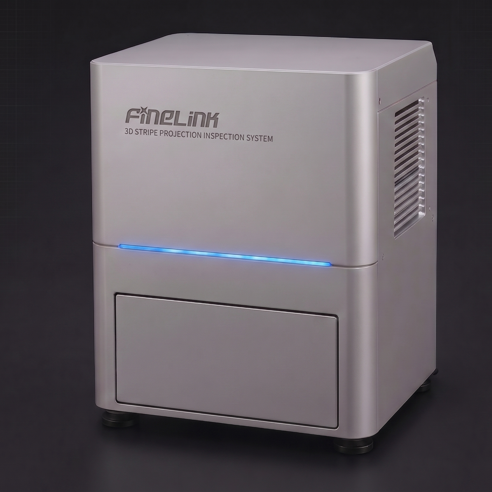
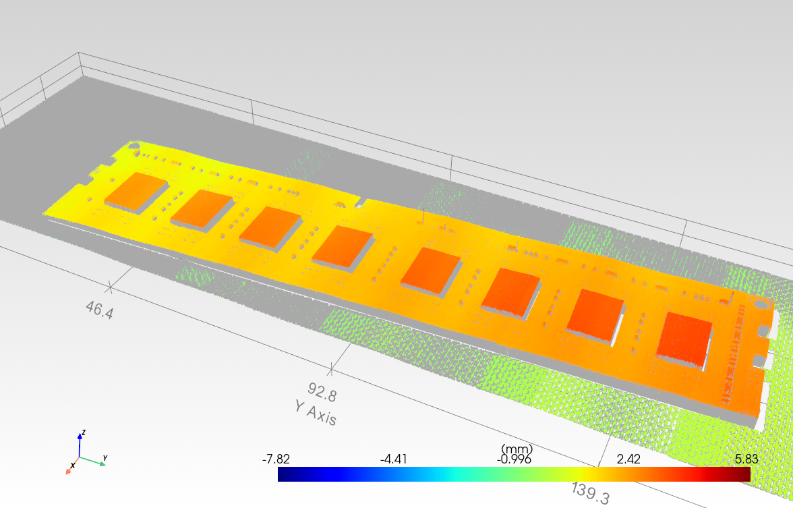
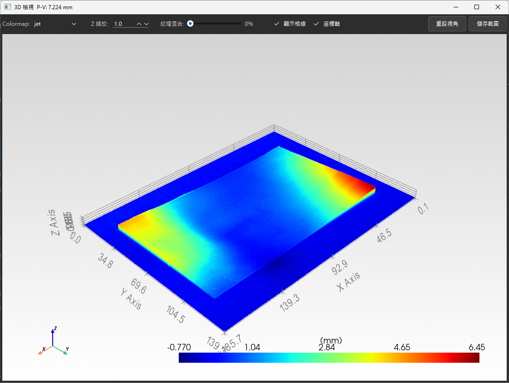
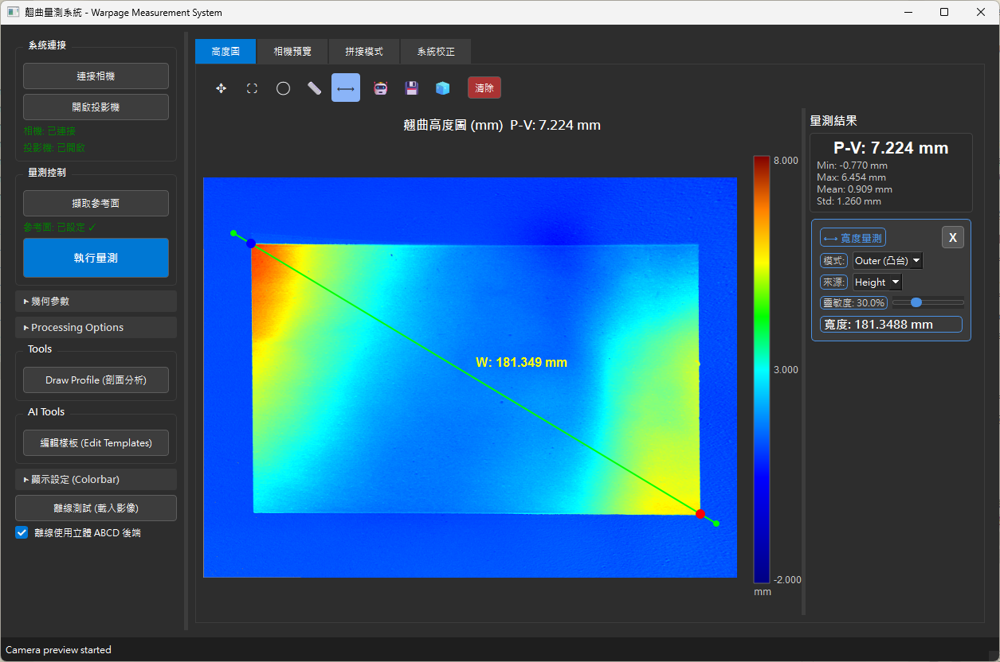

高精度 3D 輪廓量測設備
專為高反射、透明、軟性材料與精密結構量測需求所打造，提供非接觸式高精度輪廓量測能力。

-
微米級精度掃描
運用 FPP 3D 結構光技術，高解析重建表面形貌，精準捕捉微細瑕疵。
-
專為嚴苛檢測需求打造
完美克服金屬高反光與深色吸光材質帶來的取像干擾，實現高穩定度的精密量測。
-
一體化單機設計
緊湊型桌上架構，內建 3D 視覺化軟體，隨插即用，降低導入門檻。
-
工業級決策視覺平台
整合 AI 偵測及 OCR 功能。可應用於：偏光板翹曲量測、軟性材料平坦度檢測、精密結構高度差量測、表面輪廓分析、高反射材料量測。
直覺的 3D 視覺化分析

大視野 3D 拼接分析
完整還原大尺寸元件的 3D 全貌，呈現整體翹曲與平整度趨勢，讓跨視野檢測不再有死角。

整合式量測平台
內建剖面分析與數據匯出工具，滿足產線品管與研發單位的進階分析需求。

偏光板翹曲 3D 量測
大面積偏光板完整翹曲形貌一覽無遺，立體彩現直觀呈現高低起伏，協助快速判定平整度與變形趨勢。

大尺寸剖面量測
支援逾 180 mm 大視野的高度圖與任意剖面分析，精準擷取跨面翹曲量與關鍵尺寸。
軟體核心功能與演算法
自主開發 Warpage 3D 檢測軟體，深度整合光機與演算法，具備以下進階功能：
- 多頻相位解碼：結合專屬相移演算法與強效抗噪濾波，精準重建微米級 3D 高度圖。
- 高動態範圍融合：多重曝光自動融合，克服金屬反光與深色吸光材質，保留所有細節。
- 大視野拼接技術：支援多圖高精度拼接，突破單鏡頭視野限制，輕鬆應對大尺寸工件的嚴苛檢驗。
- AI 輔助與彈性配方編輯：結合深度學習與樣板編輯器，快速建立 ROI，實現靈活換線。
- 即時 3D 渲染與量測分析：全彩 3D 流暢視角，自動化執行高度落差、平整度與微細瑕疵判讀。
工業級規格
依工件尺寸提供兩種量測配置：高精度模式聚焦元件級微米量測，大視野翹曲模式則涵蓋大尺寸面板的整體變形檢測。
| 規格項目 | 高精度模式元件級精密量測 | 大視野翹曲模式大尺寸面板 / 偏光板 |
|---|---|---|
| 量測範圍 / 視野 | 50 × 38 × 40 mm | 185 × 140 × 50 mm |
| X、Y 軸解析度 | 20 μm/px | 72 μm/px |
| Z 軸解析度 (1σ) | 15 μm | 20 μm |
| 重複精度 (1σ) | ≤ 7 μm | ≤ 15 μm |
| 資料點數 | 2592 × 1944 | 2592 × 1944 |
※ Z 軸解析度為單像素靜態雜訊 (1σ)；重複精度為元件級（ROI 平均）後之 1σ 值，經空間平均故小於單像素雜訊。
※ 高精度模式重複精度為系統熱機（約 10 分鐘）後之量測結果，並經 Type-1 Gage 製程能力分析驗證：公差 ±66 μm 時 Cg ≥ 1.33（合格）、±83 μm 時 Cg ≥ 1.67（優）。
※ 大視野翹曲模式為階梯校正樣本之靜態量測結果，適用範圍為漫反射、平面 / 階梯狀工件。
※ 實際表現依工件材質、表面狀態與環境條件而異。